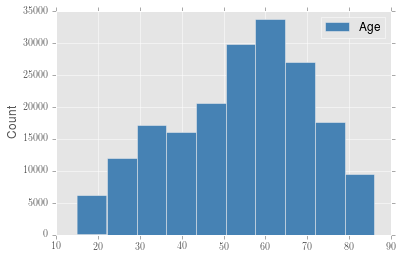

Pandas + Matplotlib + Looking pretty good

Typically matplotlib produces plots that look, well, horrible. This can be a little bit of a pain, especially because I've switched my workflow to lean heavily on ipython notebook to maintain a lab notebook. This means removing xmgrace from my workflow except for manuscript figure preparation since it won't show up inline unless I make the plot, save it as a png, move the file to the notebook directory, and then link the file in a text section. Not exactly user friendly or an improvement to my workflow. Unfortunately, just because I want to make plots in python for exploration doesn't mean that I can tolerate ugly graphs and that godforsaken default font.
So far I have two solutions and I'm quite happy with both (although neither one fixes the fact that matplotlib somehow renders an eps and makes it scale like a png). The first one has been to use prettyplotlib, which looks nice but is its own library and inherits from matplotlib. It sounds like this will eventually get merged as a style file into matplotlib in the future, which is great. The other way I describe below.
mpltools with "ggplot"
I'll be honest, I really do like ggplot in R but I don't think that the default grey background is the best for paper figures (looks great on the web though). Using mpltools you can easily change the style of plots using a simple style command like:
from mpltools import style
style.user("ggplot")
Even better, this is now in the matplotlib master branch!
So now the best part is that it's easy to get generated using a default matplotlib command and have it look pretty decent. This is especially important when using pandas, because now I can just:
import pandas as pd
df = pd.read_csv('age_data.csv')
df.age.hist(label='Age', color='steelblue')
plt.ylabel('Count')
plt.legend()
and get the result below.